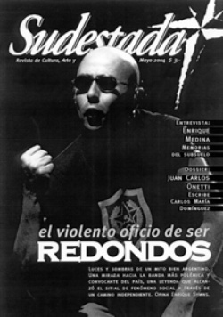

Buscar
Osvaldo Bayer en Lomas de Zamora: Prohibido Olvidar
Edición N° 28
Mayo 2004
Revista bimensual
Comprar edición impresaSumario
- Redondos: Cadáver exquisito
- La derecha afila las garras
- Pintores de Chiapas
- Enrique Medina: Memorias del subsuelo
- El trueno en la voz: Acerca de algunas letras del folclore
- Fútbol de ascenso ¿Y de primera, de quién sos?
- Osvaldo Bayer en Lomas de Zamora: Prohibido Olvidar
Compartir Articulo
A treinta años del estreno de la película La Patagonia rebelde, el escritor habló ante 200 personas en una charla organizada por Sudestada. Recuerdos de uno de los intelectuales argentinos de mayor vigencia en la actualidad.
Difícil encontrar en la cultura argentina un ejemplo mayor de coherencia y lucha como el que transmite Osvaldo Bayer, el autor de La Patagonia rebelde, la crónica de aquella épica huelga de los obreros rurales que terminó con el fusilamiento de más de mil hombres. Ese trabajo, quizás el más significativo de toda su vida, le provocó a Bayer la persecución y el exilio, pero también le permitió ganarse un lugar en el imaginario de la gente como una voz de coherencia contra la injusticia vigente en estos días.
A treinta años del estreno de la versión cinematográfica del libro de Bayer, Sudestada organizó una charla debate como excusa para poder disfrutar de las opiniones del escritor. Ante casi 200 personas, Bayer habló por más de dos horas sobre lo que el definió como "una época bastante olvidada pero que tendríamos que recordar siempre".
"Comencé a investigar los hechos de la Patagonia casi por curiosidad, ya que mis padres vivían en ese tiempo allí, y de chico me contaban historias sobre esa tragedia. Era una especie de leyenda negra. Cuando empecé a investigar tuve la suerte de poder recurrir a muchos de sus protagonistas vivos: los soldados fusiladores,
los estancieros, algunos peones. Pero la mayor parte del material lo conseguí del propio ejército", comenzó su charla Bayer. "Este trabajo me costó la persecución y el exilio, pero me dio grandes satisfacciones", admitió el escritor. Luego de relatar los detalles del proceso que terminó con la película dirigida por Héctor Olivera (una de las anécdotas comentada fue la participación del actual presidente Néstor Kirchner como extra en la película junto con un grupo de la Juventud Peronista de Santa Cruz), Bayer se centró en algunas repercusiones de su investigación.
De hecho, Bayer señaló que el verdadero final de la película era otro: "El primer final de la película era cuando las prostitutas de San Julián rechazan a los soldados fusiladores. Serían ellas las únicas en reaccionar, las que los llamaron asesinos cuando todos se habían callado la boca. La iglesia, los partidos políticos, todos se habían callado, y las únicas que reaccionaron fueron esas pobres mujeres tan humilladas. El guión fue a parar al ejército, que lógicamente lo rechazó.
Olivera me convenció de hacer el final que luego salió, con los estancieros cantandole en inglés al teniente coronel Varela. Pero lo de estas mujeres fue algo épico, se imaginan ustedes, de un prostíbulo de San Julián reaccionando de esa manera, sabiendo lo que les podía pasar".
En un momento, Osvaldo Bayer rescató una fragmento de la edición definitiva de La Patagonia rebelde, donde se describen con crudeza los fusilamientos, cómo era el trato de los soldados con sus superiores y cómo los recibían en los pueblos. En ese texto, se detalla cómo las cinco prostitutas de San Julián sacan a escobazos del burdel a los soldados, al grito de "asesinos, ladrones, con ustedes no nos acostamos".
La repercusión que tuvo el libro lo llevó a confrontar con protagonistas de la historia, y si bien no fue instantáneo, la gente comenzó a generar espacios para homenajear a los obreros muertos. "El intendente de San Julián me dijo, en ocasión de un homenaje organizado por los estudiantes, si no me parecía un poco exagerado el tema de hacerle un monumento a las prostitutas. 'Cómo le vamos a hacer un monumento en una plaza pública, donde está San Martín y Belgrano', me dijo. Yo le contesté que la idea era de los estudiantes, que no se iban a conformar con poner una placa de bronce en el prostíbulo, que todavía se conservaba, a cambio de la idea original", comentó Osvaldo.
"Hicimos una función privada para los diputados, para que firmaran una declaración a favor de la película. Cuando terminó la proyección, se fueron todos como balazos, tal era el miedo que había de comprometerse con un tema así. Cuando le pasamos la película a los senadores, pusimos en la sala mesas con champagne y comida para que se quedaran", recordó.
El papel del Partido Radical y del gobierno de Hipólito Yrigoyen siempre aparece cuando se habla de la tragedia de la Patagonia. Bayer, desde hace un buen tiempo, le envía cada tanto una carta al presidente de la UCR para pedirle explicaciones sobre lo actuado por el partido. Cada año, el silencio es la única respuesta. Inclusive, explica el escritor, "una vez me encontré con Rodolfo Terragno, a quien conocía por su paso del periodismo, y me dijo que el partido tenía demasiados problemas como para meterse con Yrigoyen".
La noche estuvo siempre animada por el tono distendido y divertido que Bayer usó para contar la parte oculta de lo que vivió cuando se estrenó la película de los fusilamientos: "La gente la recibió muy bien, la veía y gritaba cosas. La película se prohibió por el gobierno de la señora Perón, y la Triple A nos condenó a muerte, en dos días nos tuvimos que ir todos del país". Como una forma de sintetizar el trabajo de investigación y su sentimiento sobre la huelga obrera y su trágico final, Bayer leyó el texto "80 años después", donde se cuenta cómo el propio autor se encontró con la hija menor del general Anaya, texto incluido en la edición definitiva de La Patagonia rebelde. El encuentro en cuestión es un alegato sobre el trabajo y sobre los hechos, donde no se dejan dudas sobre la responsabilidad de los asesinos.
Siempre bien predispuesto, Bayer contestó todas las preguntas que le hizo el público, que retomaron los temas que le son comunes y habituales: las luchas obreras, la dictadura, el exilio, la literatura y, por supuesto, la política. Además, los asistentes pudieron disfrutar de la actuación de la agrupación lunfarda Los morlacos del otario, que interpretaron tangos teatralizados.
Las preguntas se multiplicaron, y Bayer no dejó temas por tocar. La emoción se mezcló entre las palabras, una forma de homenajear con el recuerdo perpetuo a aquellos hombres que fueron asesinados cobardemente sin ningún tipo de justificación por pelear por los derechos básicos del trabajador rural. Un recuerdo que viene ganándole hace tiempo la batalla al olvido a partir del trabajo y el compromiso del escritor que decidió ofrecer su vida en esa tarea.
(La nota completa en Sudestada Nº 28, edición gráfica)
Comentarios

Sudestada
El colectivo de Revista Sudestada esta integrado por Ignacio Portela, Hugo Montero, Walter Marini, Leandro Albani, Martín Latorraca, Pablo Fernández y Repo Bandini.
Articulos más vistos


LIBRERÍA SUDESTADA

Colección infantil

Distribuidora de Libros

Suscripción

Sudestada en URUGUAY

 Nota de tapa
Nota de tapa
 Plástica
Plástica
 Entre Líneas
Entre Líneas
 Editorial
Editorial